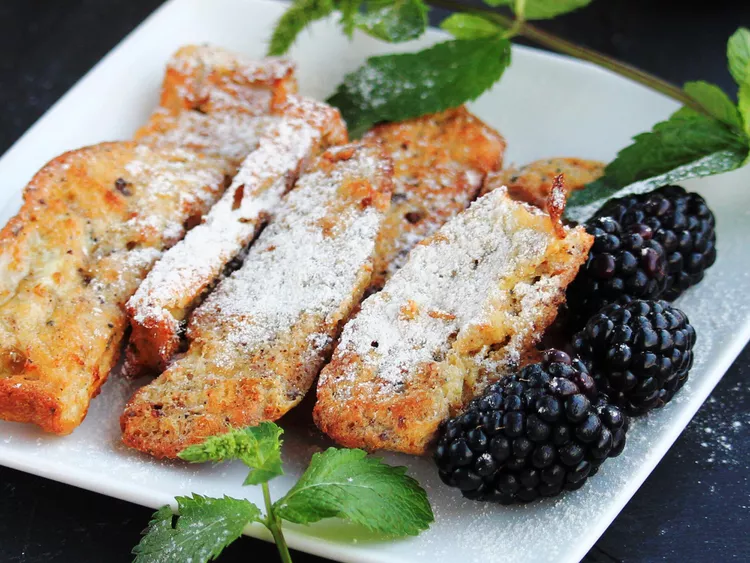

Air Fryer French Toast Sticks

Description
Crispy on the outside and soft on the inside, these French toast sticks make a delicious breakfast!
Ingredients
- 2 large eggsl
- ⅓ cup milk
- 1 tablespoon butter, melted
- 1 teaspoon vanilla extract
- 1 teaspoon ground cinnamon
- 4 slices day-old bread, cut into thirds
- 1 teaspoon confectioners' sugar, or to taste
Steps
-
Mix eggs, milk, butter, vanilla extract, and cinnamon together in a bowl.
-
Line an air fryer basket with parchment paper. Dip each piece of bread into the milk mixture and place in the basket. Make sure they are not touching; cook in batches if necessary.
-
Preheat the air fryer to 370 degrees F (188 degrees C). Add basket and cook bread for 6 minutes; flip and cook for 3 minutes more. Sprinkle each stick with confectioners' sugar.